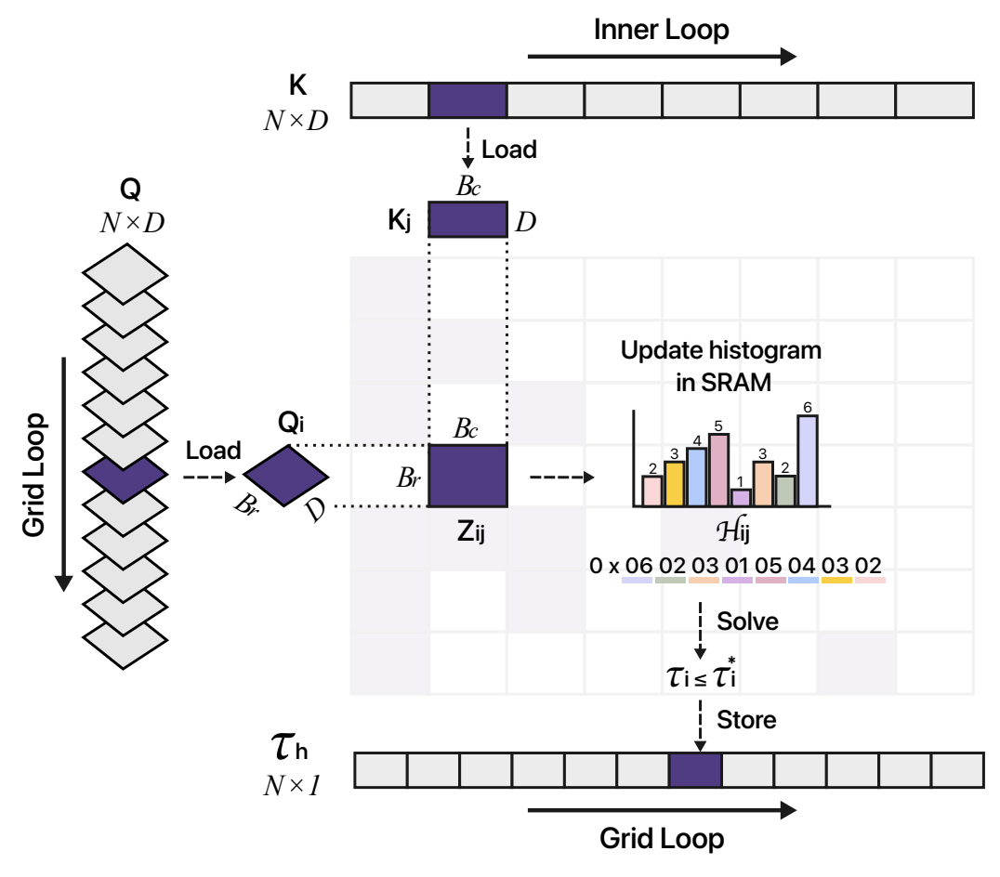

The Leap of Sparse Attention in Transformers
Part II — The Efficiency Era
Part I argued that the right object is bounded support — exact zeros, from sparsemax to α-entmax to compact kernels. This part is the engineering story, organized around one fault line the literature rarely names out loud: training-free methods that bolt sparsity onto a pretrained softmax model and can therefore only ever approximate it, versus trainable methods that make sparsity part of the model itself. It ends where our own line lives — entmax-native kernels (AdaSplash, DashAttention, EntmaxKV) that are trainable and exact, sidestepping the approximation ceiling the training-free family cannot cross.
Table of Contents
- 1. The objection Part I left open
- 2. IO-awareness: FlashAttention and exact speed
- 3. Two families: training-free vs. trainable
- 4. Training-free I: dynamic block sparsity
- 5. Training-free II: the KV cache
- 6. Training-free III: query-awareness & adaptive budgets
- 7. The approximation ceiling
- 8. Trainable: native sparse attention
- 9. Entmax-native: trainable and exact
- 10. A reality check and the open tensions
- 11. At a glance: comparison table
- References
1. The objection Part I left open
Part I ended on a practical objection. Exact, data-dependent zeros are theoretically the right thing — but two facts stood in the way of using them at scale. First, GPUs are throughput machines that want big dense matrix multiplies, not scattered token-level zeros. Second, computing the α-entmax threshold \(\tau\) requires iterative root-finding, where softmax gets its normalizer in one closed-form pass. For years this made sparse attention look like a loser on wall-clock time even when it won on FLOPs.
Dismantling that objection took a decade of systems work, most of it developed independently of the principled lineage. The pivotal realization — the one that reorganized the whole field — is that reducing FLOPs does not reduce runtime unless you also reduce memory traffic.
2. IO-awareness: FlashAttention and exact speed
A GPU has a steep memory hierarchy: a large but slow high-bandwidth memory (HBM) and a tiny but fast on-chip SRAM. Naïve attention materializes the full \(n\times n\) score matrix \(S=QK^\top\) in HBM, reads it back to softmax it, and reads it again to multiply by \(V\) — the bottleneck is that traffic, not the arithmetic. FlashAttention (Dao et al., 2022) makes attention IO-aware: it tiles \(Q,K,V\), streams the tiles through SRAM, and computes the exact output in a single fused pass, never writing \(S\) to HBM. Memory drops from \(\mathcal O(n^2)\) to \(\mathcal O(n)\), with provably
far below the \(\Theta(n^2)\) of the naïve algorithm. The trick that makes a single pass possible is online softmax: as each new key-block arrives, keep a running maximum \(m\) and running denominator \(\ell\), and rescale the partial output \(O\) by the correction factor when the max changes:
The successors form a ladder tracking GPU generations: FlashAttention-2 parallelizes over the sequence and cuts non-matmul work (Dao, 2023); FA-3 exploits Hopper asynchrony and FP8 (Shah et al., 2024); FA-4 targets Blackwell. Crucially, FlashAttention already shipped a block-sparse variant “faster than any existing approximate attention method” — the door through which principled sparsity would eventually walk. Step through the online-softmax accumulation below.
Online softmax: one streaming pass, \(\mathcal O(n)\) memory
Scores arrive in tiles. Track running max \(m\) and denominator \(\ell\); rescale as you go. The result equals the full softmax — without ever storing it.
Fig. 1. Each tile updates \(m\) and \(\ell\) and rescales the partial result; once every tile is seen, the streamed weights match the full softmax to machine precision. This is why exact attention can be fast — and why a kernel can process arbitrary blocks, present or skipped, in the same streaming frame.
3. Two families: training-free vs. trainable
Before touring the methods, it helps to draw the line that actually organizes them — a line the papers themselves often blur. Every efficient-attention method falls into one of two families, and which family it is in determines what it can and cannot achieve.
Training-free methods take a model that was pretrained with dense softmax attention and, at inference time, skip or evict part of the computation. They need no retraining, which is their great practical appeal. But it comes with a hard constraint: the model they run on assigns strictly positive weight to every token, so any sparse shortcut is an approximation of a dense distribution — and truncating a distribution that is nonzero everywhere always throws away some real probability mass. Their output error is bounded below by that discarded tail; it can be made small, but never zero.
Trainable methods instead make sparsity part of the model — present during training, so that training and inference compute the same thing. Block-native methods like NSA and MoBA learn which blocks to attend to; the entmax-native line learns attention that is sparse at the level of individual tokens, with exact zeros. Because the model is genuinely sparse, inference is not an approximation problem at all — it is support recovery, and it can be exact.
| Training-free | Trainable (native) | |
|---|---|---|
| Idea | Retrofit sparsity onto a frozen softmax model at inference | Make sparsity part of the model; train with it |
| Retraining | None — drop-in | Pretrain or finetune with the sparse operator |
| Attention it runs on | Dense softmax (positive everywhere) | Sparse by construction |
| Best-case error | δ > 0 — a dense tail is always discarded | δ = 0 — exact once the support is recovered |
| Examples | H2O, StreamingLLM, Quest, SnapKV, PyramidKV, MInference, FlexPrefill, XAttention | NSA, MoBA, InfLLM-V2, NOSA; entmax-native: AdaSplash, DashAttention, EntmaxKV |
The ceiling, stated once
A training-free method is, by definition, approximating softmax. Since softmax has no zeros, the very best it can do is keep a large-enough slice of the tail — the discarded mass is an error floor it cannot escape without changing the model. §7 makes this quantitative; it is the central argument of EntmaxKV (Duarte et al., 2026) and the reason our line invests in trainable exact sparsity rather than better approximations.
With that map in hand: §4–§6 survey the training-free family (and where it plateaus); §7 states the approximation ceiling precisely; §8 covers trainable block-native methods; and §9 arrives at the entmax-native systems that are trainable and exact.
4. Training-free I: dynamic block sparsity
The training-free family’s first move is to keep the pretrained softmax model but compute only the parts of the score matrix that matter. Once attention is computed block by block, the natural efficiency move is to skip entire blocks. The dynamic-prefill line estimates, cheaply and online, which query–key blocks carry mass and computes only those. MInference (Jiang et al., 2024) classifies each head offline into one of three patterns — A-shape, Vertical-Slash, Block-Sparse — then builds per-input sparse indices online, reporting up to \(10\times\) faster prefill at 1M tokens. FlexPrefill (Lai et al., 2025) switches patterns by a JS-divergence test; XAttention (Xu et al., 2025) scores blocks by an antidiagonal sum; MMInference (Li et al., 2025) adds modality-aware permutation.
The programmable substrate underneath is FlexAttention
(Dong et al., 2024), which compiles arbitrary
score_mod / mask_mod functions plus a BlockMask into a fused kernel —
turning “which blocks to skip” into a first-class, differentiable knob. The move from Part I’s
fixed patterns (Longformer, Big Bird) to these content-estimated patterns is the same
static→dynamic transition, now at block granularity and hardware-aligned.
5. Training-free II: the KV cache
Training sparsity is about the \(n\times n\) score matrix. Decoding sparsity is about a different object: the KV cache, the stored keys and values of all past tokens, which grows linearly with sequence length and batch size and quickly dominates memory bandwidth (Zhang et al., 2023). The serving substrate is PagedAttention (Kwon et al., 2023), which stores the cache as OS-style non-contiguous pages with copy-on-write sharing. On top of it, two philosophies compete.
(a) Eviction — bounded, irreversible state
Permanently drop tokens to cap memory. H2O (Zhang et al., 2023) keeps recent tokens plus “Heavy Hitters” (high accumulated attention), framing eviction as dynamic submodular maximization with a
against the best fixed retained set. StreamingLLM (Xiao et al., 2023) found that a few initial tokens act as attention sinks — they soak up the excess mass softmax is forced to assign somewhere — so keeping the first few tokens plus a recent window preserves quality at unbounded length. TOVA (Oren et al., 2024) views decoders as “multi-state RNNs” and drops the single lowest-attention token per step; others evict by per-head policy (Ge et al., 2024) or by key \(\ell_2\)-norm (Devoto et al., 2024).
(b) Selection — full state, chosen per query
Keep everything, but load only what this query needs. Quest (Tang et al., 2024) stores per-page coordinatewise min/max of the keys, \(m^p\) and \(M^p\), and scores a page by an upper bound on the best attention it could contain:
then loads only the top-\(K\) pages. Because the score is a provable upper bound, high-relevance pages are never wrongly skipped. SnapKV (Li et al., 2024) votes with an end-of-prompt window; PyramidKV (Cai et al., 2024) allocates non-uniform per-layer budgets; Loki (Singhania et al., 2024) ranks in a PCA subspace; ShadowKV (Sun et al., 2024) offloads values to the CPU.
Two ways to shrink the KV cache
A stream of past tokens (left→right). Teal = kept in cache; faded = gone. Toggle the strategy; the current query is the rightmost token.
Fig. 2. Eviction permanently frees memory but can throw away a token a later query needs (note the always-kept sink tokens on the far left). Selection keeps the full cache and re-picks per query, so it never loses the true top token — at the cost of storing everything. Both are heuristics on a dense model; §7 asks whether that is the right framing at all.
6. Training-free III: query-awareness & adaptive budgets
A recurring finding sharpens the picture: token importance is query-dependent. Query-agnostic scores — accumulated attention, key norm, PCA energy — are cheap but fail on retrieval, where “the criticality of a token highly depends on the query” (Tang et al., 2024). The most robust methods therefore score each key against the current query, and increasingly replace a fixed budget \(k\) with an adaptive one.
Instead of “always keep \(k\) tokens,” adaptive-budget methods keep the smallest set whose cumulative estimated mass exceeds a threshold — a top-\(p\) rule on attention:
so easy queries spend little and hard queries spend more. Twilight (Lin et al., 2025), Tactic (Zhu et al., 2025), and Double-Sparse-style top-\(p\) selection (2026) all make the budget data-dependent. If that “keep the smallest set covering mass \(p\)” rule sounds familiar, it should: it is a thresholding heuristic reaching for exactly what α-entmax computes exactly. Which is the point of the next section.
The recurring shape
Quest’s upper-bound page score, MoBA’s block gate (§8), and top-\(p\) budgets are all approximations of a single question: which keys have nonzero weight under this query? On a softmax model that set is formally all of them, so every method must estimate a fuzzy “effective support” and pay the §7 error floor. On an α-entmax model the set is exact and finite — the estimation problem dissolves.
7. The approximation ceiling
Now make the §3 warning quantitative — this is the hinge of the whole part. Every training-free method in §4–§6, however clever its scoring, is approximating a dense softmax distribution with a truncated one. And a truncated softmax always discards nonzero probability mass, so its output carries an error \(\delta>0\) that you can shrink with a bigger budget but never eliminate. That floor is the ceiling on the entire training-free family. EntmaxKV (Duarte et al., 2026) reframes the problem to remove it: with α-entmax, most keys have exactly zero weight, so an entmax decoder does not need to approximate anything —
Once the cache \(\mathcal C\) contains the (small) nonzero support, the decoder’s output is exactly equal to full-cache attention. The task changes from lossy approximation to lossless support recovery: find the handful of tokens with nonzero weight, and you are done — no budget to tune, no discarded tail. Compare the two regimes below.
Truncation error vs. support recovery
Output error \(\delta\) as the KV budget grows, for a softmax decoder (truncate the tail) vs. an α-entmax decoder (recover the support).
Fig. 3. The softmax curve decays but never touches zero — a dense tail is always left behind. The α-entmax curve hits exactly zero the moment the budget reaches the support size, and stays there. Sparsity in the model turns a hard approximation problem into an easy exact one — the inference-time restatement of Part I’s dispersion argument.
8. Trainable: native sparse attention
Cross into the second family. Instead of approximating a frozen dense model, train the sparsity in — so training and inference compute the same sparse operation and the kernel is co-designed with the pattern. These methods escape the §7 ceiling in principle, because the model they run is genuinely sparse. Most of them, though, are sparse at block granularity (which suits GPUs) rather than at the level of individual tokens. Native Sparse Attention (NSA) (Yuan et al., 2025) runs three branches per query — a coarse compressed stream, a selected set of blocks, and a local sliding window — combined by a learned gate, with a block layout aligned to GPU tensor cores.
MoBA (Lu et al., 2025) makes the “attention sparsity is routing” analogy literal: it treats KV blocks as experts and applies Mixture-of-Experts top-\(k\) gating, scoring each block by the affinity of the query to the block’s mean key
explicitly adopting a “less structure” principle: let the model decide where to attend rather than imposing a fixed pattern. InfLLM-V2 (2025) switches smoothly between dense and sparse; NOSA (2025) splits the budget into query-aware and query-agnostic parts with a proven locality lower bound. Sparsity has become an architectural primitive, not a post-hoc filter — the same destination Part I reached from the theory side.
One thing these block-native methods do not quite give you is exactness. They learn which blocks to keep, but inside a kept block the attention is still a dense softmax, and a dropped block is still an approximation with \(\delta>0\). Closing that last gap — trainable sparsity that is exact at the token level — is where our own line comes in.
Block routing: attention as top-\(k\) expert selection
A query routes to KV blocks by affinity to each block’s mean key (MoBA-style). Keep the top-\(k\); skip the rest.
Fig. 4. Each block’s bar is its gate score \(g_i\); the top-\(k\) (teal) are computed, the rest (faded) are skipped entirely. This is Mixture-of-Experts routing with KV blocks as experts — the mechanism that makes trained-in sparsity hardware-friendly.
9. Entmax-native: trainable and exact
This is the corner of the design space that is both trainable and token-exact — and, as far as the two-family map goes, the only one. α-entmax is trained into the model (Part I), so its zeros are real, not approximated; the job that remains is purely a systems one. And it is a genuinely hard one, because α-entmax breaks the two assumptions FlashAttention is built on: its normalizer is not a closed-form reduction, and its zeros are unstructured (per-token, data-dependent), not neatly block-aligned. This section opens up the kernels — AdaSplash and AdaSplash‑2 — and shows exactly how each obstacle is turned into a speedup rather than a tax.
The bottleneck: a normalizer with no closed form
Softmax gets its normalizer for free — \(\tau=\log\sum_j e^{s_j}\) is one streaming reduction, computed alongside the running max in FlashAttention’s online‑softmax. α-entmax’s threshold is the root of
which has no closed form for general \(\alpha\). Every query row needs its own \(\tau\), found by iterative root‑finding over that row’s scores. Historically this is what kept sparse attention off the FlashAttention Pareto frontier: the inner loop is not a reduction but a solve. The whole engineering story is about making that solve — and the sparsity it unlocks — nearly free.
AdaSplash: a safeguarded Halley–bisection solve
AdaSplash’s _get_tau kernel keeps \(f\) monotone and brackets the root in \([\tau_{\text{lo}},
\tau_{\text{hi}}]\), then takes second‑order Halley steps that fall back to bisection whenever a step
would leave the bracket. Because a single tiled pass over the scores can accumulate \(f,f',f''\) at once
(three running moments), each iteration is cheap, and the quadratic‑convergence of Halley cuts the iteration
count by roughly \(7\times\) versus plain bisection.
The solver runs inside the tiled Q×K loop (block sizes like \(B_r{=}64,\,B_c{=}16\) for the \(\tau\) phase), so it reuses scores already staged in SRAM rather than re‑reading them from HBM.
AdaSplash‑2: a histogram that brackets τ before you solve
AdaSplash‑2’s insight is to spend the first streaming pass building a coarse histogram of the scores in SRAM, then read a provable bound on \(\tau\) straight off the bin counts — so the root‑finder starts from a tight bracket and converges in one or two steps. The figure shows the forward kernel: as each key tile \(K_j\) streams through, the score tile \(Z_{ij}\) updates the per‑query histogram \(\mathcal H_{ij}\); a reverse sweep over bins gives \(\tau_i \le \tau_i^\star\), which is stored and handed to the solver.

Fig. 5. The AdaSplash‑2 forward pass. Query blocks \(Q_i\) (grid loop) and key blocks \(K_j\) (inner loop) stream through SRAM; each score tile \(Z_{ij}\) updates a compact histogram \(\mathcal H_{ij}\) held on‑chip. To keep it free, the bin counts are bit‑packed into a single 64‑bit word (the kernel picks \(\text{BINS}\in\{8,4,2\}\) so every counter fits in \(64/\text{BINS}\) bits and cannot overflow). A reverse sweep accumulates \(\sum z,\ \sum 1,\ \sum z^2\) and stops at the first bin where the quadratic constraint \(n\,\tau^2-2z\,\tau+\sum z^2<1\) holds, yielding a lower bound \(\tau_i \le \tau_i^\star\) — a tight initialization that needs no dense intermediates.
Skipping the zeros: from boolean masks to bit‑packing
A threshold is only half the win; the other half is not computing the blocks that end up all‑zero.
AdaSplash marks each \(64\times 64\) tile with a boolean bmask — a block is skippable when every
score in it falls below \(\tau\) (a row‑wise OR reduction) — then compute_bidxs_and_cubcounts
turns that into a list of surviving block indices, so the output kernel iterates only over
good_nblocks per query.
AdaSplash‑2 shrinks the mask itself. Instead of one byte per block it packs one bit per key block,
32 blocks to an int32 (a 32× smaller mask), building it on the fly as
bmask <<= 1; bmask += (Σ qk_mask > 0) and flushing every 32 blocks. The output
kernel then walks only the set bits using the GPU’s native find‑next‑set instruction
(fns.b32), jumping straight from one nonzero block to the next with no per‑block branch. Small
mask, branch‑free traversal, less HBM traffic.
The backward pass is sparse too — and that is where it pays
Training spends more time in the backward pass than the forward, so this is where exactness has to earn its keep. It does, because the α-entmax Jacobian is itself sparse: for \(p=\alpha\text{-entmax}(s)\),
So gradients touch only the surviving tokens. AdaSplash splits the backward into separate kernels for
\(dQ\) and for \(dK,dV\) (plus a small pre‑pass computing \(\delta=\sum_i o_i\,\mathrm{d}o_i\)), recomputes
\(\tau\) and the activations from the saved threshold rather than storing the \(n\times n\) matrix, and
reuses the very same block mask to skip null blocks. AdaSplash‑2 goes further and
transposes the block mask (transpose_bmask) so the \(dK,dV\) kernel — which must loop
over query blocks per key block — also iterates only over active blocks. At high sparsity this turns the
backward pass from the dominant cost into an order‑of‑magnitude speedup.
So many ways to be “efficient”
“Faster attention” hides at least six distinct axes, and a method can win on one while losing on another:
- FLOPs vs. bandwidth. Skipping blocks cuts FLOPs, but the win only shows on the clock if it also cuts HBM traffic — hence bit‑packed masks and fused kernels.
- Forward vs. backward. The backward pass is the larger bill; a method that only accelerates the forward leaves most of training on the table.
- Prefill vs. decode. Prefill is compute‑bound over the full \(n\times n\); decode is memory‑bound over the KV cache. Different bottlenecks, different kernels (this is why EntmaxKV is a separate decode‑time system).
- Structured vs. unstructured. Token‑exact zeros are unstructured; GPUs want contiguous blocks. AdaSplash pays a small granularity cost to keep exactness; NSA/MoBA choose block‑native sparsity instead.
- The cost of the mask itself. Deciding which blocks to skip must be cheaper than computing them — otherwise the bookkeeping eats the savings. The on‑chip histogram exists precisely to make that decision almost free.
- Numerics & load balance. \(\mathrm{fp32}\) accumulation, \(2^x\)/\(\log_2\) instead of \(e^x\), and rows whose support sizes vary wildly (a load‑balancing problem the kernel must tolerate) all shape real throughput.
Two more systems close the loop. DashAttention (Huang et al., 2026) fuses differentiable, adaptive entmax routing with FlashAttention stages; and EntmaxKV (Duarte et al., 2026) is the decode‑time answer to §7’s ceiling — exact support recovery (\(\delta=0\), not \(\delta>0\)) in paged Triton kernels. Together the four show that exact, adaptive, trainable sparsity is now competitive with the most optimized dense kernels: you do not have to choose between exactness and speed.
Play with it
I built an interactive, touch-friendly companion to this section for ICML — drag α to watch tokens snap to zero, step the τ solver from bisection to histogram (11 → 2 → 1 iterations), and watch the attention map dissolve into skippable blocks: α-entmax → AdaSplash, hands-on →
10. A reality check and the open tensions
Efficiency claims are easy to overstate, so it is worth ending on discipline. The Sparse Frontier (Nawrot et al., 2025) evaluates training-free sparse attention across a four-axis taxonomy and finds it genuinely shifts the accuracy–efficiency Pareto frontier — while warning that fixed-budget methods are suboptimal in production and that gains are task-dependent. The live disagreements that will shape the next few years:
| Tension | One camp | The other |
|---|---|---|
| Where sparsity lives | Retrofit onto a dense model (H2O, Quest, MInference) | Train it in natively (NSA, MoBA, InfLLM-V2) |
| Granularity | Token-exact zeros (sparsemax/entmax) | Hardware-aligned blocks (NSA, XAttention) |
| Importance | Query-agnostic scores (H2O, key-norm) | Query-aware selection (Quest, NOSA) |
| Cache policy | Eviction — bounded, irreversible (H2O, TOVA) | Selection — full state, reversible (Quest, ShadowKV) |
| Length generalization | Patch softmax (Scalable-Softmax, temperature) | Replace softmax (α-entmax, exact zeros) |
| Approximation | Truncate a dense tail (δ > 0) | Recover an exact support (δ = 0, EntmaxKV) |
Read down the right column and a single position emerges: sparsity should be a property of the model, trained in, exact, and co-designed with the kernel. That is precisely the object Part I built from sparsemax and α-entmax. The efficiency era did not replace the principled lineage — it caught up to it.
11. At a glance: the whole landscape
One table for the whole zoo, grouped by family. Read across for what each method does; the column that matters most is the last technical one — approximates softmax (a permanent error floor) versus exact (δ = 0). Scroll the table sideways to see every column.
| Method | Family | Stage | Granularity | Selection signal | Query-aware | vs. softmax | Key idea |
|---|---|---|---|---|---|---|---|
| Training-free — retrofit sparsity onto a frozen softmax model (no retraining) | |||||||
| StreamingLLM | training-free | decode | token | first tokens + recent window | no | approximates | “attention sinks” absorb overflow mass |
| H2O | training-free | decode | token | accumulated attention (heavy hitters) | no | approximates | submodular eviction, (1−α)(1−1/e) bound |
| TOVA | training-free | decode | token | lowest current attention | partly | approximates | decoder as a multi-state RNN |
| FastGen | training-free | decode | token / head | per-head structure profile | partly | approximates | cheapest eviction policy per head |
| SnapKV | training-free | prefill→decode | token | end-of-prompt voting window | yes | approximates | observation window picks key tokens |
| PyramidKV | training-free | prefill | token | attention, non-uniform layer budget | yes | approximates | pyramidal per-layer budget allocation |
| Quest | training-free | decode | page | page min/max upper bound on Q·K | yes | approximates | query-aware page selection, top-K pages |
| Loki | training-free | decode | token | PCA-subspace key ranking | partly | approximates | score keys in a low-rank subspace |
| ShadowKV | training-free | decode | token | low-rank keys, CPU-offloaded values | yes | approximates | keep everything, re-select per step |
| MInference | training-free | prefill | block | offline head pattern + online index | yes | approximates | A-shape / Vertical-Slash / Block-Sparse |
| FlexPrefill | training-free | prefill | block | JS-divergence pattern switch | yes | approximates | choose the pattern per input |
| XAttention | training-free | prefill | block | antidiagonal block score | yes | approximates | cheap block-importance estimate |
| Twilight / Tactic | training-free | decode | token / block | adaptive top-p budget | yes | approximates | data-dependent budget, not fixed k |
| Trainable — sparsity is part of the model; training and inference match | |||||||
| Sparse Transformer | trainable | train | block | fixed strided + local | no | fixed pattern | O(n·√n) factorized attention |
| Longformer / Big Bird | trainable | train | block | window + global (+ random) | no | fixed pattern | O(n); Big Bird is a universal approx. |
| Reformer | trainable | train | bucket | angular LSH hashing | yes | approximates | attend within a hash bucket |
| Routing Transformer | trainable | train | cluster | online spherical k-means | yes | approximates | attend within the same centroid |
| NSA | trainable | train | block | compress + select + slide, gated | yes | block-native | hardware-aligned 3-branch attention |
| MoBA | trainable | train | block | MoE top-k over KV blocks | yes | block-native | attention = expert routing |
| InfLLM-V2 | trainable | train | block | dense↔sparse switch | yes | block-native | smooth dense-to-sparse transition |
| NOSA | trainable | train | block | query-aware + query-agnostic split | yes | block-native | proven locality lower bound |
| sparsemax / α-entmax | trainable | train | token | learned threshold τ (exact zeros) | yes | exact (δ=0) | differentiable, input-adaptive sparsity |
| AdaSplash / AdaSplash-2 | trainable | train | token → block-skip | entmax support + null-block skip | yes | exact (δ=0) | fast entmax: Halley/histogram τ, bitmask |
| DashAttention | trainable | train | block | differentiable entmax routing | yes | exact-native | entmax routing fused with FlashAttention |
| EntmaxKV | trainable | decode | token | exact support recovery | yes | exact (δ=0) | recover the support, don’t approximate |
Table. “Approximates” = the method runs on a dense softmax model and discards nonzero mass, so its error has a floor (§7). “Fixed pattern” / “block-native” = trainable but sparse only at block granularity. “Exact (δ=0)” = the model is genuinely sparse at the token level, so inference can match full attention exactly. The bottom four rows — token-exact and trainable — are the corner our own work lives in.
References
In order of appearance. Links go to arXiv.
- Dao et al. FlashAttention: Fast and Memory-Efficient Exact Attention with IO-Awareness. NeurIPS 2022.
- Dao. FlashAttention-2. 2023.
- Shah et al. FlashAttention-3. NeurIPS 2024.
- Jiang et al. MInference: Accelerating Pre-filling for Long-Context LLMs via Dynamic Sparse Attention. NeurIPS 2024.
- Lai et al. FlexPrefill. ICLR 2025.
- Xu et al. XAttention: Block Sparse Attention with Antidiagonal Scoring. 2025.
- Li et al. MMInference. 2025.
- Dong et al. Flex Attention. 2024.
- Zhang et al. H2O: Heavy-Hitter Oracle for Efficient Generative Inference. NeurIPS 2023.
- Kwon et al. Efficient Memory Management for LLM Serving with PagedAttention. SOSP 2023.
- Xiao et al. Efficient Streaming Language Models with Attention Sinks. ICLR 2024.
- Oren et al. Transformers are Multi-State RNNs (TOVA). 2024.
- Ge et al. Model Tells You What to Discard (FastGen). ICLR 2024.
- Devoto et al. A Simple and Effective \(L_2\) Norm-Based KV Cache Compression. 2024.
- Tang et al. Quest: Query-Aware Sparsity for Efficient Long-Context Inference. ICML 2024.
- Li et al. SnapKV. NeurIPS 2024.
- Cai et al. PyramidKV. 2024.
- Singhania et al. Loki: Low-Rank Keys for Efficient Sparse Attention. NeurIPS 2024.
- Sun et al. ShadowKV. 2024.
- Lin et al. Twilight: Adaptive Top-p Sparse Attention. 2025.
- Zhu et al. Tactic: Adaptive Sparse Attention with Clustering and Distribution Fitting. 2025.
- Yuan et al. Native Sparse Attention (NSA). 2025.
- Lu et al. MoBA: Mixture of Block Attention for Long-Context LLMs. 2025.
- InfLLM-V2. Dense-Sparse Switchable Attention. 2025.
- NOSA. Native and Offloadable Sparse Attention. 2025.
- Gonçalves, Treviso & Martins. AdaSplash: Adaptive Sparse Flash Attention. ICML 2025.
- Gonçalves, Pitorro, Niculae, Ponti, Li, Martins & Treviso. AdaSplash-2: Faster Differentiable Sparse Attention. 2026.
- Huang et al. DashAttention. 2026.
- Duarte, Couceiro & Treviso. EntmaxKV: Support-Aware Decoding for Entmax Attention. 2026.
- Nawrot et al. The Sparse Frontier: Sparse Attention Trade-offs in Transformer LLMs. 2025.